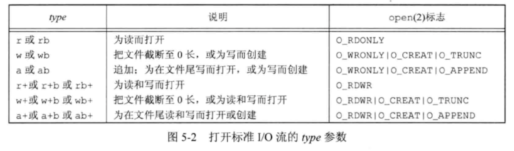

<!DOCTYPE html>
<html lang="en">

<head>
  <meta charset="utf-8" />
   
  <meta name="keywords" content="生活,旅行,思考,代码,博客" />
   
  <meta name="description" content="一座孤岛" />
  
  <meta name="viewport" content="width=device-width, initial-scale=1, maximum-scale=1" />
  <title>
    《APUE》ch5——标准I/O库 |  akaQin&#39;s Blog
  </title>
  <meta name="generator" content="hexo-theme-yilia-plus">
  
  <link rel="shortcut icon" href="/favicon.ico" />
  
  
<link rel="stylesheet" href="/css/style.css">

  
<script src="/js/pace.min.js"></script>


  

  

<link rel="alternate" href="/atom.xml" title="akaQin's Blog" type="application/atom+xml">
</head>

</html>

<body>
  <div id="app">
    <main class="content">
      <section class="outer">
  <article id="post-《APUE》ch5——标准I-O库" class="article article-type-post" itemscope
  itemprop="blogPost" data-scroll-reveal>

  <div class="article-inner">
    
    <header class="article-header">
       
<h1 class="article-title sea-center" style="border-left:0" itemprop="name">
  《APUE》ch5——标准I/O库
</h1>
  

    </header>
    

    
    <div class="article-meta">
      <a href="/2019/10/03/%E3%80%8AAPUE%E3%80%8Bch5%E2%80%94%E2%80%94%E6%A0%87%E5%87%86I-O%E5%BA%93/" class="article-date">
  <time datetime="2019-10-03T01:35:30.000Z" itemprop="datePublished">2019-10-03</time>
</a>
      
  <div class="article-category">
    <a class="article-category-link" href="/categories/%E3%80%8AAPUE%E3%80%8B%E7%AC%94%E8%AE%B0/">《APUE》笔记</a>
  </div>

      
      
<div class="word_count">
    <span class="post-time">
        <span class="post-meta-item-icon">
            <i class="ri-quill-pen-line"></i>
            <span class="post-meta-item-text"> 字数统计:</span>
            <span class="post-count">1.5k字</span>
        </span>
    </span>

    <span class="post-time">
        &nbsp; | &nbsp;
        <span class="post-meta-item-icon">
            <i class="ri-book-open-line"></i>
            <span class="post-meta-item-text"> 阅读时长≈</span>
            <span class="post-count">5分钟</span>
        </span>
    </span>
</div>

      
    </div>
    

    
    
    <div class="tocbot"></div>


    

    
    <div class="article-entry" itemprop="articleBody">
      


      

      
      <h2 id="流和FILE对象"><a href="#流和FILE对象" class="headerlink" title="流和FILE对象"></a>流和<code>FILE</code>对象</h2><p>所有不带缓冲的I/O函数都是围绕文件描述符进行的。而对于标准I/O库，它们的操作是围绕流进行的。当用标准I/O库打开或创建一个文件时，我们已使一个流与一个文件相关联。<br>对于ASCII字符集，一个字符用一个字节表示，对于国际字符集，一个字符用多个字节表示。标准I/O文件流可用于单字节或多字节字符集，由流的定向决定。</p>
<figure class="highlight c"><table><tr><td class="gutter"><pre><span class="line">1</span><br><span class="line">2</span><br></pre></td><td class="code"><pre><span class="line"><span class="comment">//设置流的定向</span></span><br><span class="line"><span class="function"><span class="keyword">int</span> <span class="title">fwide</span><span class="params">(FILE *fp, <span class="keyword">int</span> mode)</span></span>;</span><br></pre></td></tr></table></figure>

<h3 id="标准输入、标准输出和标准错误"><a href="#标准输入、标准输出和标准错误" class="headerlink" title="标准输入、标准输出和标准错误"></a>标准输入、标准输出和标准错误</h3><p>对一个进程预定义了3个流，这3个流可以自动地被进程使用:</p>
<ul>
<li>文件指针<code>stdin</code>对应文件描述符<code>STDIN_FILENO</code></li>
<li>文件指针<code>stdout</code>对应文件描述符<code>STDOUT_FILENO</code></li>
<li>文件指针<code>stderr</code>对应文件描述符<code>STDERR_FILENO</code></li>
</ul>
<a id="more"></a>

<h2 id="缓冲"><a href="#缓冲" class="headerlink" title="缓冲"></a>缓冲</h2><p>标准I/O库提供缓冲以尽可能减少read和write调用的次数，它也对每个I/O流自动的进行缓冲管理。</p>
<ul>
<li>全缓冲<br>这种情况下，在填满标准I/O缓冲区后才进行实际I/O操作。对于驻留在磁盘上的文件通常是由标准I/O库实施全缓冲的。</li>
<li>行缓冲<br>这种情况下，在输入和输出中遇到换行符时，标准I/O库执行I/O操作。通常用在终端上。</li>
<li>不带缓冲<br>标准I/O库不对字符进行缓冲，通常用在标准错误上。</li>
</ul>
<figure class="highlight c"><table><tr><td class="gutter"><pre><span class="line">1</span><br><span class="line">2</span><br><span class="line">3</span><br><span class="line">4</span><br><span class="line">5</span><br><span class="line">6</span><br></pre></td><td class="code"><pre><span class="line"><span class="comment">//打开或关闭缓冲</span></span><br><span class="line"><span class="function"><span class="keyword">void</span> <span class="title">setbuf</span><span class="params">(FILE *<span class="keyword">restrict</span> fp, <span class="keyword">char</span> *<span class="keyword">restrict</span> buf)</span></span>;</span><br><span class="line"><span class="comment">//更改缓冲类型</span></span><br><span class="line"><span class="function"><span class="keyword">int</span> <span class="title">setvbuf</span><span class="params">(FILE *<span class="keyword">restrict</span> fp, <span class="keyword">char</span> *<span class="keyword">restrict</span> buf, <span class="keyword">int</span> mode, <span class="keyword">size_t</span> <span class="built_in">size</span>)</span></span>;</span><br><span class="line"><span class="comment">//冲洗一个流</span></span><br><span class="line"><span class="function"><span class="keyword">int</span> <span class="title">fflush</span><span class="params">(FILE *FP)</span></span>;</span><br></pre></td></tr></table></figure>


<h2 id="打开-关闭流"><a href="#打开-关闭流" class="headerlink" title="打开/关闭流"></a>打开/关闭流</h2><figure class="highlight c"><table><tr><td class="gutter"><pre><span class="line">1</span><br><span class="line">2</span><br><span class="line">3</span><br><span class="line">4</span><br><span class="line">5</span><br><span class="line">6</span><br><span class="line">7</span><br><span class="line">8</span><br></pre></td><td class="code"><pre><span class="line"><span class="comment">//打开指定文件</span></span><br><span class="line"><span class="function">FILE *<span class="title">fopen</span><span class="params">(<span class="keyword">const</span> <span class="keyword">char</span> *<span class="keyword">restrict</span> pathname, <span class="keyword">const</span> <span class="keyword">char</span> *<span class="keyword">restrict</span> type)</span></span>;</span><br><span class="line"><span class="comment">//重新打开（关闭再打开）文件，用于打开预定义的流（标准输入/输出/错误）</span></span><br><span class="line"><span class="function">FILE *<span class="title">freopen</span><span class="params">(<span class="keyword">const</span> <span class="keyword">char</span> *<span class="keyword">restrict</span> pathname, <span class="keyword">const</span> <span class="keyword">char</span> *<span class="keyword">restrict</span> type, FILE *<span class="keyword">restrict</span> fp)</span></span>;</span><br><span class="line"><span class="comment">//根据描述符打开文件，常用在由管道和网络通信通道函数返回的描述符</span></span><br><span class="line"><span class="function">FILE *<span class="title">fdopen</span><span class="params">(<span class="keyword">int</span> fd, <span class="keyword">const</span> <span class="keyword">char</span> *type)</span></span>;</span><br><span class="line"><span class="comment">//关闭流</span></span><br><span class="line"><span class="function"><span class="keyword">int</span> <span class="title">fclose</span><span class="params">(FILE *fp)</span></span>;</span><br></pre></td></tr></table></figure>
<p>打开方式：<br><br><strong>函数返回前记得关闭流以释放缓冲区</strong></p>
<h2 id="读和写流"><a href="#读和写流" class="headerlink" title="读和写流"></a>读和写流</h2><h3 id="每次一个字符"><a href="#每次一个字符" class="headerlink" title="每次一个字符"></a>每次一个字符</h3><figure class="highlight c"><table><tr><td class="gutter"><pre><span class="line">1</span><br><span class="line">2</span><br><span class="line">3</span><br><span class="line">4</span><br><span class="line">5</span><br><span class="line">6</span><br><span class="line">7</span><br><span class="line">8</span><br><span class="line">9</span><br><span class="line">10</span><br><span class="line">11</span><br></pre></td><td class="code"><pre><span class="line"><span class="meta">#<span class="meta-keyword">include</span> <span class="meta-string">&lt;stdio.h&gt;</span></span></span><br><span class="line"><span class="comment">//读</span></span><br><span class="line"><span class="function"><span class="keyword">int</span> <span class="title">getc</span><span class="params">(FILE *fp)</span></span>;</span><br><span class="line"><span class="function"><span class="keyword">int</span> <span class="title">fgetc</span><span class="params">(FILE *fp)</span></span>;</span><br><span class="line"><span class="function"><span class="keyword">int</span> <span class="title">getchar</span><span class="params">(<span class="keyword">void</span>)</span></span>;</span><br><span class="line"><span class="comment">//压回流中</span></span><br><span class="line"><span class="function"><span class="keyword">int</span> <span class="title">ungetc</span><span class="params">(<span class="keyword">int</span> c, FILE *fp)</span></span>;</span><br><span class="line"></span><br><span class="line"><span class="function"><span class="keyword">int</span> <span class="title">putc</span><span class="params">(<span class="keyword">int</span> c, FILE *fp)</span></span>;</span><br><span class="line"><span class="function"><span class="keyword">int</span> <span class="title">fputc</span><span class="params">(<span class="keyword">int</span> c, FILE *fp)</span></span>;</span><br><span class="line"><span class="function"><span class="keyword">int</span> <span class="title">putchar</span><span class="params">(<span class="keyword">int</span> c)</span></span>;</span><br></pre></td></tr></table></figure>
<p>getchar 等同于 getc(stdin)。前两者的区别是getc可以被实现为宏，这意味着：</p>
<ul>
<li>getc的参数不应当是具有副作用的表达式，因为可能会被计算多次</li>
<li>fgetc一定是个函数，所以可以得到其地址，允许当参数传递</li>
<li>fgetc的调用时长可能要比getc长。</li>
</ul>
<h3 id="错误处理"><a href="#错误处理" class="headerlink" title="错误处理"></a>错误处理</h3><figure class="highlight c"><table><tr><td class="gutter"><pre><span class="line">1</span><br><span class="line">2</span><br><span class="line">3</span><br><span class="line">4</span><br><span class="line">5</span><br><span class="line">6</span><br></pre></td><td class="code"><pre><span class="line"><span class="comment">//判断是否出错</span></span><br><span class="line"><span class="function"><span class="keyword">int</span> <span class="title">ferror</span><span class="params">(FILE *fp)</span></span>;</span><br><span class="line"><span class="comment">//判断是否到达文件尾端</span></span><br><span class="line"><span class="function"><span class="keyword">int</span> <span class="title">feof</span><span class="params">(FILE *fp)</span></span>;</span><br><span class="line"><span class="comment">//清除错误</span></span><br><span class="line"><span class="function"><span class="keyword">void</span> <span class="title">clearerr</span><span class="params">(FILE *fp)</span></span>;</span><br></pre></td></tr></table></figure>

<h3 id="每次一行"><a href="#每次一行" class="headerlink" title="每次一行"></a>每次一行</h3><figure class="highlight c"><table><tr><td class="gutter"><pre><span class="line">1</span><br><span class="line">2</span><br><span class="line">3</span><br><span class="line">4</span><br><span class="line">5</span><br></pre></td><td class="code"><pre><span class="line"><span class="function"><span class="keyword">char</span> *<span class="title">fgets</span><span class="params">(<span class="keyword">char</span> *<span class="keyword">restrict</span> buf, <span class="keyword">int</span> n, FILE *<span class="keyword">restrict</span>)</span></span>;</span><br><span class="line"><span class="function"><span class="keyword">char</span> *<span class="title">gets</span><span class="params">(<span class="keyword">char</span> *buf)</span></span>;</span><br><span class="line"></span><br><span class="line"><span class="function"><span class="keyword">int</span> <span class="title">fputs</span><span class="params">(<span class="keyword">const</span> <span class="keyword">char</span> *<span class="keyword">restrict</span> str, FILE *<span class="keyword">restrict</span> fp)</span></span>;</span><br><span class="line"><span class="function"><span class="keyword">int</span> <span class="title">puts</span><span class="params">(<span class="keyword">const</span> <span class="keyword">char</span> *str)</span></span>;</span><br></pre></td></tr></table></figure>
<p><strong>不推荐使用gets和puts。因为不能指定缓冲区长度，可能造成缓冲区溢出</strong></p>
<h3 id="二进制I-O"><a href="#二进制I-O" class="headerlink" title="二进制I/O"></a>二进制I/O</h3><figure class="highlight c"><table><tr><td class="gutter"><pre><span class="line">1</span><br><span class="line">2</span><br><span class="line">3</span><br></pre></td><td class="code"><pre><span class="line"><span class="function"><span class="keyword">size_t</span> <span class="title">fread</span><span class="params">(<span class="keyword">void</span> *<span class="keyword">restrict</span> ptr, <span class="keyword">size_t</span> <span class="built_in">size</span>, <span class="keyword">size_t</span> nobj, FILE *<span class="keyword">restrict</span> fp)</span></span>;</span><br><span class="line"></span><br><span class="line"><span class="function"><span class="keyword">size_t</span> <span class="title">fwrite</span><span class="params">(<span class="keyword">const</span> <span class="keyword">void</span> *<span class="keyword">restrict</span> ptr, <span class="keyword">size_t</span> <span class="built_in">size</span>, <span class="keyword">size_t</span> nobj, FILE *<span class="keyword">restrict</span> fp)</span></span>;</span><br></pre></td></tr></table></figure>

<h3 id="内存流"><a href="#内存流" class="headerlink" title="内存流"></a>内存流</h3><p>SUSv4中支持了内存流。这就是标准I/O流，虽然仍使用FILE指针进行访问，但并没有底层文件。所有的I/O都是通过在缓冲区与主存之间来回传送字节完成的。</p>
<figure class="highlight c"><table><tr><td class="gutter"><pre><span class="line">1</span><br><span class="line">2</span><br></pre></td><td class="code"><pre><span class="line"><span class="comment">//创建内存流</span></span><br><span class="line"><span class="function">FILE *<span class="title">fmemopen</span><span class="params">(<span class="keyword">void</span> *<span class="keyword">restrict</span> buf, <span class="keyword">size_t</span> <span class="built_in">size</span>, <span class="keyword">const</span> <span class="keyword">char</span> *<span class="keyword">restrict</span> type)</span></span>;</span><br></pre></td></tr></table></figure>
<p>因为避免了缓冲区溢出，内存流非常适用于创建字符串。因为内存流只访问主存，不访问磁盘上的文件，所以对于把标准I/O流作为参数用于临时文件的函数来说，会有很大的性能提升。</p>
<h2 id="定位流"><a href="#定位流" class="headerlink" title="定位流"></a>定位流</h2><figure class="highlight c"><table><tr><td class="gutter"><pre><span class="line">1</span><br><span class="line">2</span><br><span class="line">3</span><br><span class="line">4</span><br><span class="line">5</span><br><span class="line">6</span><br><span class="line">7</span><br><span class="line">8</span><br><span class="line">9</span><br></pre></td><td class="code"><pre><span class="line"><span class="function"><span class="keyword">long</span> <span class="title">ftell</span><span class="params">(FILE *fp)</span></span>;</span><br><span class="line"><span class="function"><span class="keyword">int</span> <span class="title">fseek</span><span class="params">(FILE *fp, <span class="keyword">long</span> offset, <span class="keyword">int</span> whence)</span></span>;</span><br><span class="line"><span class="function"><span class="keyword">void</span> <span class="title">rewind</span><span class="params">(FILE *fp)</span></span>;</span><br><span class="line"></span><br><span class="line"><span class="function"><span class="keyword">off_t</span> <span class="title">ftello</span><span class="params">(FILE *fp)</span></span>;</span><br><span class="line"><span class="function"><span class="keyword">int</span> <span class="title">fseeko</span><span class="params">(FILE *fp, <span class="keyword">off_t</span> offset, <span class="keyword">int</span> whence)</span></span>;</span><br><span class="line"></span><br><span class="line"><span class="function"><span class="keyword">int</span> <span class="title">fgetpos</span><span class="params">(FILE *<span class="keyword">restrict</span> fp, <span class="keyword">fpos_t</span> *<span class="keyword">restrict</span> pos)</span></span>;</span><br><span class="line"><span class="function"><span class="keyword">int</span> <span class="title">fsetpos</span><span class="params">(FILE *fp, <span class="keyword">const</span> <span class="keyword">fpos_t</span> *pos)</span></span>;</span><br></pre></td></tr></table></figure>


<h2 id="标准I-O的优却点及效率"><a href="#标准I-O的优却点及效率" class="headerlink" title="标准I/O的优却点及效率"></a>标准I/O的优却点及效率</h2><p>使用标准I/O优点是无需考虑缓冲及最佳I/O长度的选择。不足之处是效率不高，这与它需要复制的数据量有关。当使用每次一行的fgets和fputs时，需要复制两次数据：依次是在内核和标准I/O缓冲区之间（当调用read和write时），第二次是在标准I/O缓冲区和用户程序中的行缓冲区之间。<br>标准I/O库与直接调用read和write相比并不慢很多。对于大多数复杂的应用程序，最主要的用户CPU时间是由应用本身的各种处理消耗的，而不是由标准I/O例程消耗的。</p>
<h2 id="格式化I-O"><a href="#格式化I-O" class="headerlink" title="格式化I/O"></a>格式化I/O</h2><p>格式化输出：</p>
<ul>
<li>printf 将格式化数据写到标准输出</li>
<li>fprintf 写到指定的流</li>
<li>dprintf 写到指定的文件描述符</li>
<li>sprintf 写到给定的缓冲区中。结尾自动加NULL，但该字符不计算在返回值中</li>
<li>snprintf 同上。但sprintf可能会造成缓冲区溢出，所以推荐使用snprintf显式指定缓冲区长度</li>
</ul>
<p>格式化输入：</p>
<ul>
<li>scanf 从标准输入中分析字符串</li>
<li>fscanf 从流中分析</li>
<li>sscanf 从给定缓冲区中分析</li>
</ul>
<h2 id="实现细节"><a href="#实现细节" class="headerlink" title="实现细节"></a>实现细节</h2><p>UNIX中，标准I/O库最终都要调用第3章中说明的不带缓冲的I/O例程。每个I/O流都有一个与其相关的文件描述符。</p>
<figure class="highlight c"><table><tr><td class="gutter"><pre><span class="line">1</span><br></pre></td><td class="code"><pre><span class="line"><span class="function"><span class="keyword">int</span> <span class="title">fileno</span><span class="params">(FILE *fp)</span></span>; <span class="comment">//获取流对应的描述符</span></span><br></pre></td></tr></table></figure>

<h2 id="临时文件"><a href="#临时文件" class="headerlink" title="临时文件"></a>临时文件</h2><figure class="highlight c"><table><tr><td class="gutter"><pre><span class="line">1</span><br><span class="line">2</span><br><span class="line">3</span><br><span class="line">4</span><br><span class="line">5</span><br></pre></td><td class="code"><pre><span class="line"><span class="function"><span class="keyword">char</span> *<span class="title">tmpnam</span><span class="params">(<span class="keyword">char</span> *ptr)</span></span>; <span class="comment">//产生一个与现有文件名不同的一个有效路径名字符串</span></span><br><span class="line"><span class="function">FILE *<span class="title">tmpfile</span><span class="params">(<span class="keyword">void</span>)</span></span>; <span class="comment">//创建一个临时二进制文件（类型wb+），在关闭该文件或程序结束时自动删除</span></span><br><span class="line"></span><br><span class="line"><span class="function"><span class="keyword">char</span> *<span class="title">mkdtemp</span><span class="params">(<span class="keyword">char</span> *<span class="keyword">template</span>)</span></span>; <span class="comment">//创建一个目录，该目录有一个唯一的名字</span></span><br><span class="line"><span class="function"><span class="keyword">int</span> <span class="title">mkstemp</span><span class="params">(<span class="keyword">char</span> *<span class="keyword">template</span>)</span></span>; <span class="comment">//创建一个文件，该文件有一个唯一的名字</span></span><br></pre></td></tr></table></figure>

      
      <!-- reward -->
      
      <div id="reward-btn">
        打赏
      </div>
      
    </div>
    

      <!-- copyright -->
      
        <div class="declare">
          <ul class="post-copyright">
            <li>
              <i class="ri-copyright-line"></i>
              <strong>版权声明： </strong s>
              本博客所有文章除特别声明外，均采用 <a href="https://www.apache.org/licenses/LICENSE-2.0.html" rel="external nofollow"
                target="_blank">Apache License 2.0</a> 许可协议。转载请注明出处！
            </li>
          </ul>
        </div>
        
    <footer class="article-footer">
      
          
<div class="share-btn">
      <span class="share-sns share-outer">
        <i class="ri-share-forward-line"></i>
        分享
      </span>
      <div class="share-wrap">
        <i class="arrow"></i>
        <div class="share-icons">
          
          <a class="weibo share-sns" href="javascript:;" data-type="weibo">
            <i class="ri-weibo-fill"></i>
          </a>
          <a class="weixin share-sns wxFab" href="javascript:;" data-type="weixin">
            <i class="ri-wechat-fill"></i>
          </a>
          <a class="qq share-sns" href="javascript:;" data-type="qq">
            <i class="ri-qq-fill"></i>
          </a>
          <a class="douban share-sns" href="javascript:;" data-type="douban">
            <i class="ri-douban-line"></i>
          </a>
          <!-- <a class="qzone share-sns" href="javascript:;" data-type="qzone">
            <i class="icon icon-qzone"></i>
          </a> -->
          
          <a class="facebook share-sns" href="javascript:;" data-type="facebook">
            <i class="ri-facebook-circle-fill"></i>
          </a>
          <a class="twitter share-sns" href="javascript:;" data-type="twitter">
            <i class="ri-twitter-fill"></i>
          </a>
          <a class="google share-sns" href="javascript:;" data-type="google">
            <i class="ri-google-fill"></i>
          </a>
        </div>
      </div>
</div>

<div class="wx-share-modal">
    <a class="modal-close" href="javascript:;"><i class="ri-close-circle-line"></i></a>
    <p>扫一扫，分享到微信</p>
    <div class="wx-qrcode">
      
    </div>
</div>

<div id="share-mask"></div>
      
      
  <ul class="article-tag-list" itemprop="keywords"><li class="article-tag-list-item"><a class="article-tag-list-link" href="/tags/I-O/" rel="tag">I/O</a></li></ul>


    </footer>

  </div>

  
  
  <nav class="article-nav">
    
      <a href="/2019/10/19/%E3%80%8AAPUE%E3%80%8Bch7%E2%80%94%E2%80%94%E8%BF%9B%E7%A8%8B%E7%8E%AF%E5%A2%83/" class="article-nav-link">
        <strong class="article-nav-caption">上一篇</strong>
        <div class="article-nav-title">
          
            《APUE》ch7——进程环境
          
        </div>
      </a>
    
    
      <a href="/2019/09/27/%E3%80%8AAPUE%E3%80%8Bch4%E2%80%94%E2%80%94%E6%96%87%E4%BB%B6%E5%92%8C%E7%9B%AE%E5%BD%95/" class="article-nav-link">
        <strong class="article-nav-caption">下一篇</strong>
        <div class="article-nav-title">《APUE》ch4——文件和目录</div>
      </a>
    
  </nav>


  

  
  
<!-- valine评论 -->
<div id="vcomments-box">
    <div id="vcomments">
    </div>
</div>
<script src="//cdn1.lncld.net/static/js/3.0.4/av-min.js"></script>
<script src='https://cdn.jsdelivr.net/npm/valine@1.3.10/dist/Valine.min.js'></script>
<script>
    new Valine({
        el: '#vcomments',
        app_id: 'X2Yrs2HgM1dBr94LBlfP7Jsj-gzGzoHsz',
        app_key: 'x2WQjNYF5CQseEAN1iSqXOLQ',
        path: window.location.pathname,
        notify: 'true',
        verify: 'false',
        avatar: 'mp',
        placeholder: '给我的文章加点评论吧~',
        recordIP: true
    });
    const infoEle = document.querySelector('#vcomments .info');
    if (infoEle && infoEle.childNodes && infoEle.childNodes.length > 0) {
        infoEle.childNodes.forEach(function (item) {
            item.parentNode.removeChild(item);
        });
    }
</script>
<style>
    #vcomments-box {
        padding: 5px 30px;
    }

    @media screen and (max-width: 800px) {
        #vcomments-box {
            padding: 5px 0px;
        }
    }

    #vcomments-box #vcomments {
        background-color: #fff;
    }

    .v .vlist .vcard .vh {
        padding-right: 20px;
    }

    .v .vlist .vcard {
        padding-left: 10px;
    }
</style>

  

  
  
  

</article>

</section>
      <footer class="footer">
  <div class="outer">
    <ul class="list-inline">
      <li>
        &copy;
        2019-2020
        Aaron Qin
      </li>
      <li>
        
      </li>
    </ul>
    <ul class="list-inline">
      <li>
        
        
        <span>
  <i>PV:<span id="busuanzi_value_page_pv"></span></i>
  <i>UV:<span id="busuanzi_value_site_uv"></span></i>
</span>
        
      </li>
      <li>
        <!-- cnzz统计 -->
        
      </li>
    </ul>
  </div>
</footer>
    <div class="to_top">
        <div class="totop" id="totop">
  <i class="ri-arrow-up-line"></i>
</div>
      </div>
    </main>
      <aside class="sidebar">
        <button class="navbar-toggle"></button>
<nav class="navbar">
  
  <div class="logo">
    <a href="/"></a>
  </div>
  
  <ul class="nav nav-main">
    
    <li class="nav-item">
      <a class="nav-item-link" href="/">主页</a>
    </li>
    
    <li class="nav-item">
      <a class="nav-item-link" href="/archives">归档</a>
    </li>
    
    <li class="nav-item">
      <a class="nav-item-link" href="/categories">分类</a>
    </li>
    
    <li class="nav-item">
      <a class="nav-item-link" href="/tags">标签</a>
    </li>
    
    <li class="nav-item">
      <a class="nav-item-link" href="/about/me">关于我</a>
    </li>
    
  </ul>
</nav>
<nav class="navbar navbar-bottom">
  <ul class="nav">
    <li class="nav-item">
      
      <a class="nav-item-link nav-item-search"  title="Search">
        <i class="ri-search-line"></i>
      </a>
      
      
      <a class="nav-item-link" target="_blank" href="/atom.xml" title="RSS Feed">
        <i class="ri-rss-line"></i>
      </a>
      
    </li>
  </ul>
</nav>
<div class="search-form-wrap">
  <div class="local-search local-search-plugin">
  <input type="search" id="local-search-input" class="local-search-input" placeholder="Search...">
  <div id="local-search-result" class="local-search-result"></div>
</div>
</div>
      </aside>
      <div id="mask"></div>

<!-- #reward -->
<div id="reward">
  <span class="close"><i class="ri-close-line"></i></span>
  <p class="reward-p"><i class="ri-cup-line"></i>请我喝杯咖啡吧~</p>
  <div class="reward-box">
    
    <div class="reward-item">
      
      <span class="reward-type">支付宝</span>
    </div>
    
    
    <div class="reward-item">
      
      <span class="reward-type">微信</span>
    </div>
    
  </div>
</div>
      
<script src="/js/jquery-2.0.3.min.js"></script>


<script src="/js/jquery.justifiedGallery.min.js"></script>


<script src="/js/lazyload.min.js"></script>


<script src="/js/busuanzi-2.3.pure.min.js"></script>


<script src="/js/share.js"></script>


<script src="/fancybox/jquery.fancybox.min.js"></script>


<script>
  try {
    var typed = new Typed("#subtitle", {
    strings: ['Look, if you had one shot or one opportunity','To seize everything you ever wanted in one moment','Would you capture it, or just let it slip? Yo'],
    startDelay: 0,
    typeSpeed: 300,
    loop: true,
    backSpeed: 200,
    showCursor: true
    });
  } catch (err) {
  }
  
</script>


<script src="/js/tocbot.min.js"></script>

<script>
  // Tocbot_v4.7.0  http://tscanlin.github.io/tocbot/
  tocbot.init({
    tocSelector: '.tocbot',
    contentSelector: '.article-entry',
    headingSelector: 'h1, h2, h3, h4, h5, h6',
    hasInnerContainers: true,
    scrollSmooth: true,
    scrollContainer:'main',
    positionFixedSelector: '.tocbot',
    positionFixedClass: 'is-position-fixed',
    fixedSidebarOffset: 'auto',
    onClick: (e) => {
      $('.toc-link').removeClass('is-active-link');
      $(`a[href=${e.target.hash}]`).addClass('is-active-link');
      $(e.target.hash).scrollIntoView();
      return false;
    }
  });
</script>


<script>
  var ayerConfig = {
    mathjax: false
  }
</script>


<script src="/js/ayer.js"></script>


<script src="https://cdn.jsdelivr.net/npm/jquery-modal@0.9.2/jquery.modal.min.js"></script>
<link rel="stylesheet" href="https://cdn.jsdelivr.net/npm/jquery-modal@0.9.2/jquery.modal.min.css">


<!-- Root element of PhotoSwipe. Must have class pswp. -->
<div class="pswp" tabindex="-1" role="dialog" aria-hidden="true">

    <!-- Background of PhotoSwipe. 
         It's a separate element as animating opacity is faster than rgba(). -->
    <div class="pswp__bg"></div>

    <!-- Slides wrapper with overflow:hidden. -->
    <div class="pswp__scroll-wrap">

        <!-- Container that holds slides. 
            PhotoSwipe keeps only 3 of them in the DOM to save memory.
            Don't modify these 3 pswp__item elements, data is added later on. -->
        <div class="pswp__container">
            <div class="pswp__item"></div>
            <div class="pswp__item"></div>
            <div class="pswp__item"></div>
        </div>

        <!-- Default (PhotoSwipeUI_Default) interface on top of sliding area. Can be changed. -->
        <div class="pswp__ui pswp__ui--hidden">

            <div class="pswp__top-bar">

                <!--  Controls are self-explanatory. Order can be changed. -->

                <div class="pswp__counter"></div>

                <button class="pswp__button pswp__button--close" title="Close (Esc)"></button>

                <button class="pswp__button pswp__button--share" style="display:none" title="Share"></button>

                <button class="pswp__button pswp__button--fs" title="Toggle fullscreen"></button>

                <button class="pswp__button pswp__button--zoom" title="Zoom in/out"></button>

                <!-- Preloader demo http://codepen.io/dimsemenov/pen/yyBWoR -->
                <!-- element will get class pswp__preloader--active when preloader is running -->
                <div class="pswp__preloader">
                    <div class="pswp__preloader__icn">
                        <div class="pswp__preloader__cut">
                            <div class="pswp__preloader__donut"></div>
                        </div>
                    </div>
                </div>
            </div>

            <div class="pswp__share-modal pswp__share-modal--hidden pswp__single-tap">
                <div class="pswp__share-tooltip"></div>
            </div>

            <button class="pswp__button pswp__button--arrow--left" title="Previous (arrow left)">
            </button>

            <button class="pswp__button pswp__button--arrow--right" title="Next (arrow right)">
            </button>

            <div class="pswp__caption">
                <div class="pswp__caption__center"></div>
            </div>

        </div>

    </div>

</div>

<link rel="stylesheet" href="https://cdn.jsdelivr.net/npm/photoswipe@4.1.3/dist/photoswipe.min.css">
<link rel="stylesheet" href="https://cdn.jsdelivr.net/npm/photoswipe@4.1.3/dist/default-skin/default-skin.css">
<script src="https://cdn.jsdelivr.net/npm/photoswipe@4.1.3/dist/photoswipe.min.js"></script>
<script src="https://cdn.jsdelivr.net/npm/photoswipe@4.1.3/dist/photoswipe-ui-default.min.js"></script>

<script>
    function viewer_init() {
        let pswpElement = document.querySelectorAll('.pswp')[0];
        let $imgArr = document.querySelectorAll(('.article-entry img:not(.reward-img)'))

        $imgArr.forEach(($em, i) => {
            $em.onclick = () => {
                // slider展开状态
                // todo: 这样不好，后面改成状态
                if (document.querySelector('.left-col.show')) return
                let items = []
                $imgArr.forEach(($em2, i2) => {
                    let img = $em2.getAttribute('data-idx', i2)
                    let src = $em2.getAttribute('data-target') || $em2.getAttribute('src')
                    let title = $em2.getAttribute('alt')
                    // 获得原图尺寸
                    const image = new Image()
                    image.src = src
                    items.push({
                        src: src,
                        w: image.width || $em2.width,
                        h: image.height || $em2.height,
                        title: title
                    })
                })
                var gallery = new PhotoSwipe(pswpElement, PhotoSwipeUI_Default, items, {
                    index: parseInt(i)
                });
                gallery.init()
            }
        })
    }
    viewer_init()
</script>


<script type="text/javascript" src="https://js.users.51.la/20544303.js"></script>
  </div>
</body>

</html>